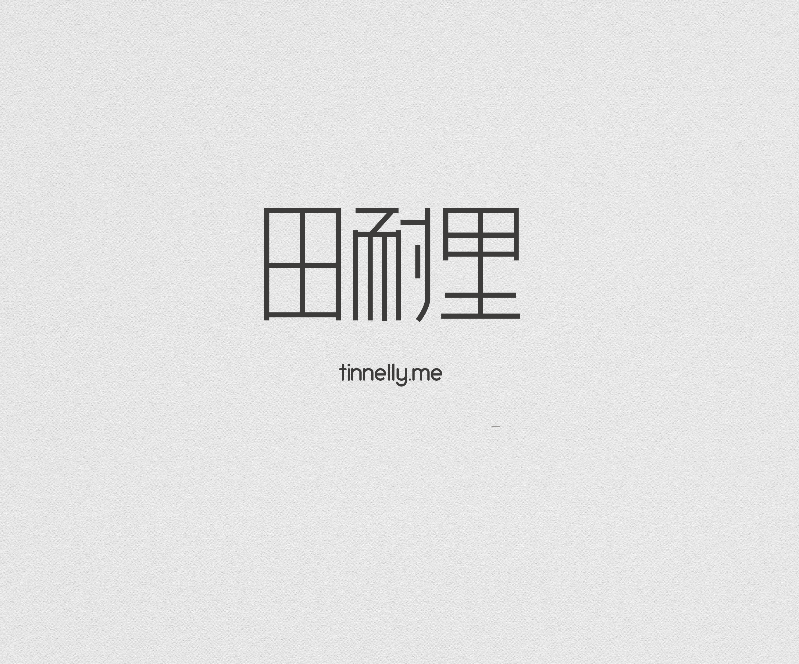
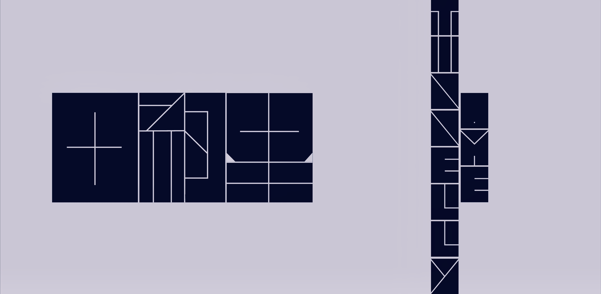
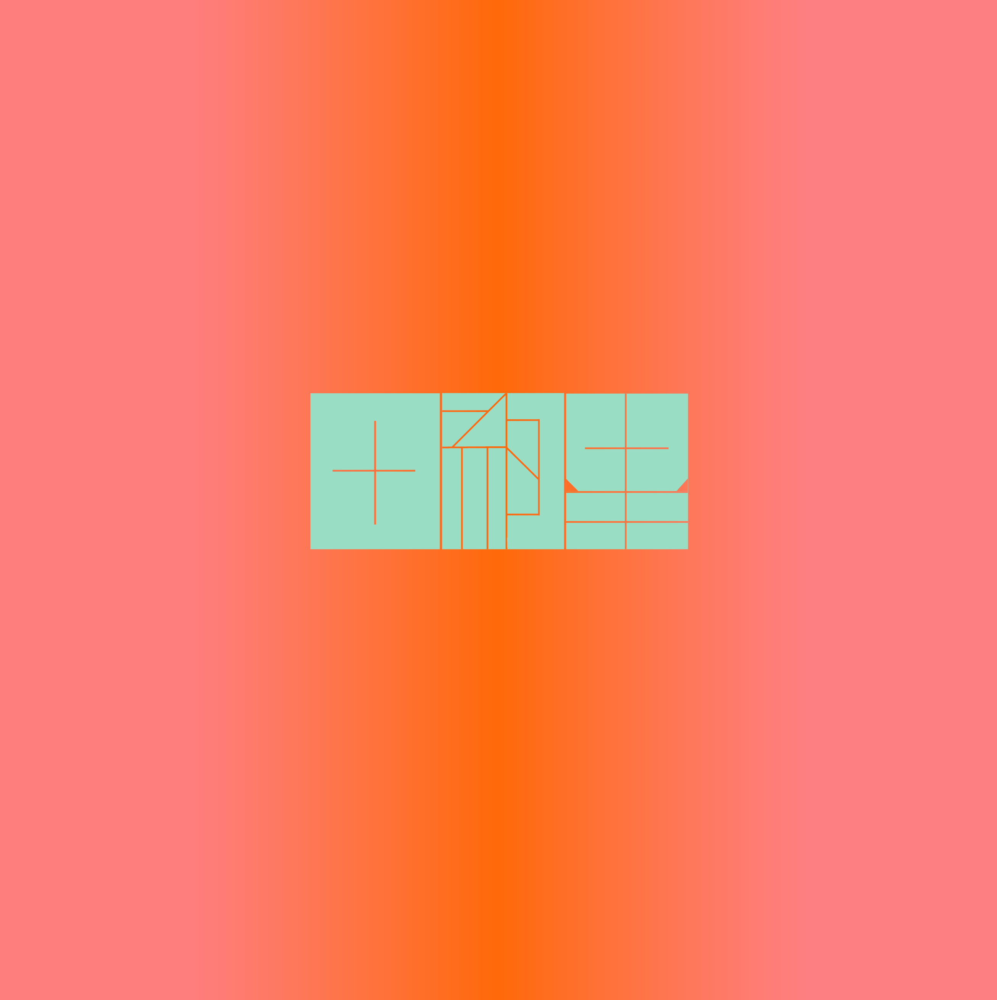
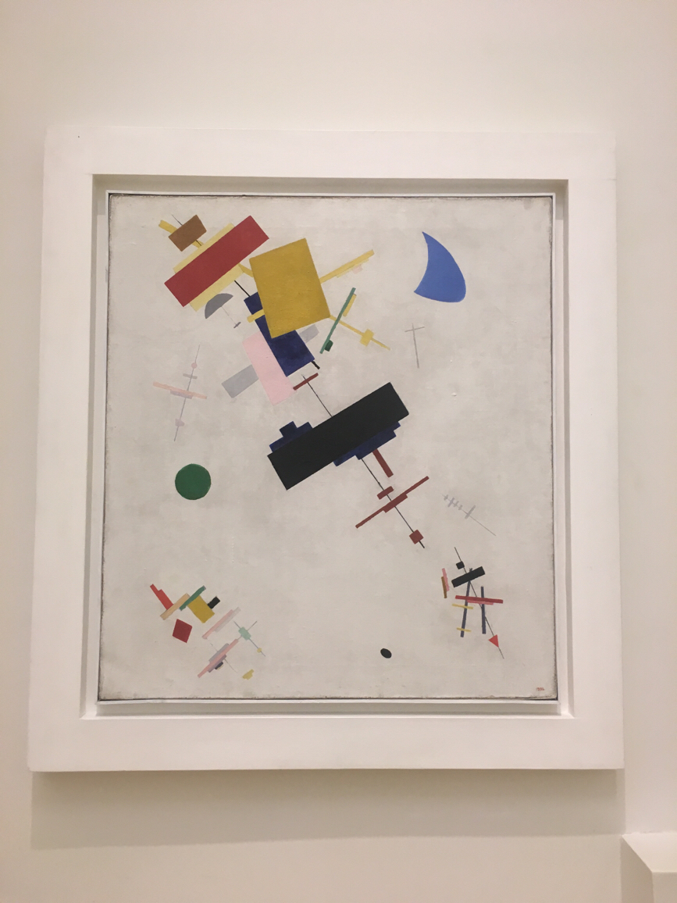

太久没有干设计的活计了，不确定自己能不能吃这碗饭。于是想来拿自己试试手，为自己设计。
哦，瞧瞧我这个网名，谁能想到它原本是一种药材，是闽南语里[棉茵陈]的叫法。它没有任何寓意，起这个名字是个随机事件，如同匪夷所思的甲方需求一样也是不确定的。但还是要为它开工。
这是我的草图：
真的是很草了。
以下是方案汇总：
1：
这是一个最初的方案，是我最开始的想法，停留在脑子里面很久的图形。如果我不继续做推进的话，它就是最终结果。我不太喜欢它，显得过于圆润，田字写圆了，不论怎么调整都像轮子，这可不太妙。它的延伸设计也不好往下推进(不能很好的往下编）
2：

这个方案里我醒悟了，找到了一种沉稳的字形结构，纤细优雅，我——开始显得有文化。它中规中矩，不太会出错，能在很多地方看到类似的设计。它也很好画，直线工具就能搞定。但我不确定中文字体库有没有差不太多的字形，它的标识感不强，我可能还会在细节上调整它。
3：

这是一个又粗又黑的方块，这里用到了负形设计。我不太擅长负形设计，犹如我的版画作业一向很糟一样。细细的线条像在一张纸上用刀片划开。
这种设计不是我的原创，比如我就找到了英文字体[QUB]也在用这种设计，于是我直接下载了它用来写域名，省了很多事，也让设计语言看起来很统一：D
这个设计有一个问题，如果图案过于小的话，那写细线就会看不见，而如果加粗线条，又显得不那么有逼格。这个图案适合放在底色很绚的图片上，颜色透过细线透出来，但我还没有找到合适的图片。
因为黑色看起来压迫感比较强，而我毕竟是个娘们，所以做了这个死亡配色版，补色关系让它看起来很刺激，很符合我现在的精神状态。

我觉得它很适合放在webapp启动加载页面，所以做了一个只有田字的版本，它也很适合做图标：
4：
这是我草图上那个想法的实现。我喜欢它。我喜欢方形、线条。这个图做的我很爽快。做完之后我发现我能在其中找到“田耐里”三个字的首字母“T,N,L”,这激发了我更多想法。
这是上面的延伸，我觉得能做延伸设计是一个想法成熟的表现。因为可能要在很多地方应用它。如果它只有一种形态变化，就会显得很被动。
这是色彩方案。这个图也是“做爽了”系列，因为通过颜色，我在“田耐里”这个字形里找到了我的域名TINNELLY.ME的拆解(但我没有找到M，很难过，逼死完美主义者)。我的作品开始有自己的内部逻辑，并且能够自冾。我可以不用动脑了，它们带着我走，还有比这更爽的事吗。
我还可以通过此致敬伟大的艺术家们：康定斯基、蒙特里安、马列维奇。
我反正玩爽了。累且开心。
等等。所以到底该用哪个方案。
我可能还要想想。
最后，感谢这本《上海字记》，提供了很多灵感。这是一本记录一百年间上海印刷品实物的书。在那个简体汉字字形还没有完全被确定下来，设计还没有具体的规范下，我感受到各种想法的繁盛与纷争，一些设计即使现在看也很超前。
感谢马列维奇、感谢康定斯基，俄罗斯艺术宝库毕生取之不竭。

图片摄于埃尔米塔什博物馆 《Супрематизм № 56》 1915-1916